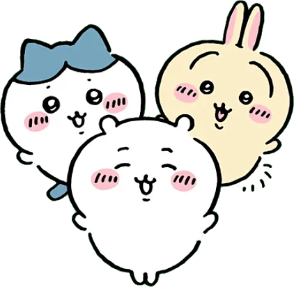
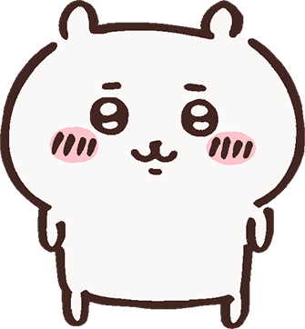
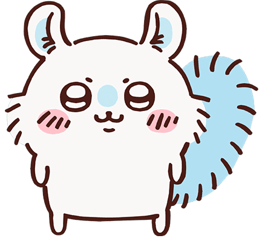
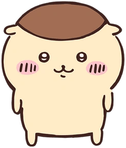
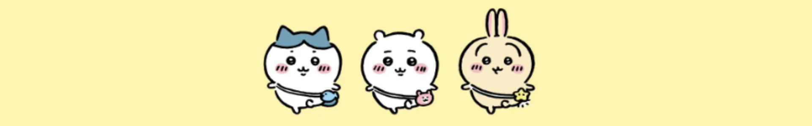

¡¡¡AGUANTE CHIIKAWA!!! ʕ•ᴥ•ʔ
Chiikawa (ちいかわ), también conocida como Nanka Chiisakute Kawaii Yatsu (なんかちいさくてかわいいやつ), que significa "Algo pequeño y lindo", es una serie de manga japonesa de Nagano . Se ha serializado en línea a través de Twitter desde enero de 2020 y Kodansha lo está recopilando en volúmenes. Una adaptación de la serie de televisión de anime dirigida por Takenori Mihara en Doga Kobo se estrenó en abril de 2022. Los episodios se lanzan en el programa de noticias matutino Mezamashi TV de Fuji TV y en YouTube.

Mis personajes favoritos!!
Chiikawa

Chiikawa (ちいかわ) es el personaje principal y protagonista. En el verso de Chiikawa, es el mejor amigo de Hachiware y Usagi, y pasan gran parte del tiempo juntos.
Momonga

Momonga (モモンガ) es un personaje principal de la serie de manga y anime. Es una ardilla voladora a la que a menudo se le ve pidiendo atención, llenándose de comida y causando problemas a otros personajes.
Kurimanju

Kurimanju (くりまんじゅう) es un personaje principal. Se trata de un tejón de miel que recuerda a un bollo japonés de castaña y que disfruta bebiendo alcohol y dándose grandes banquetes.
